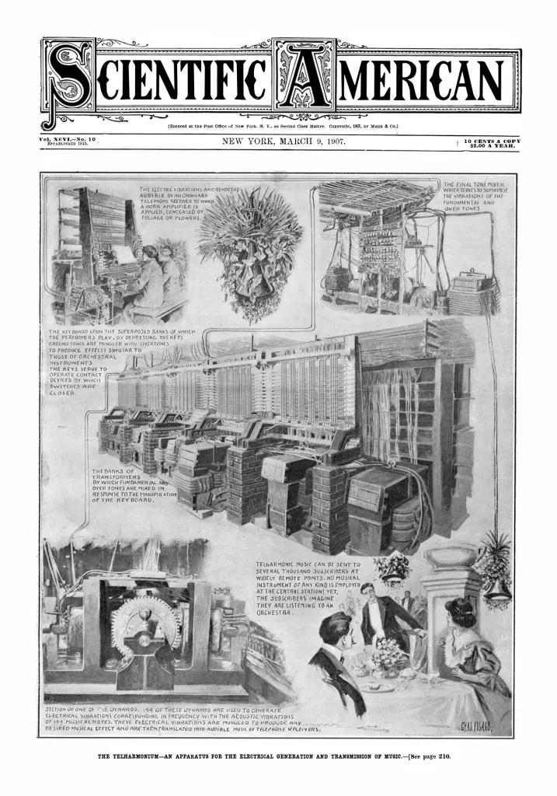
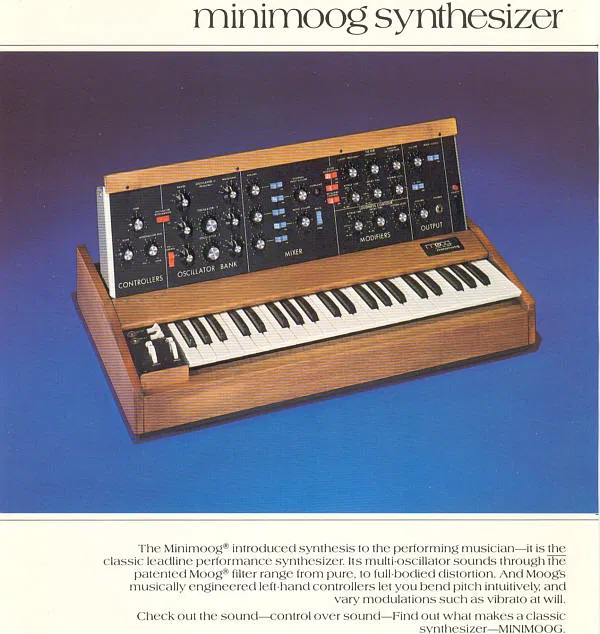
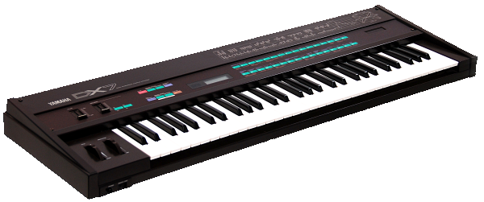

Electronic music. What does that make you think of? Maybe you picture deep bass in dank clubs; maybe the funky cyberpunkish vibes of late-century Euro synth songs; perhaps the low-res midi bleeps of old video games; or, possibly, the thrum and shiver of old sci-fi film scores. Whatever it is that pricks at your ears when you think of "electronic music," we're going to try to cover it today, and also branch out beyond your expectations of the art form.
Here's a playlist of all the music in this lesson, in the order it's presented on this page:
Before we continue, I want to make you aware of an incredible website called Ishkur's Guide to Electronic Music. It's an interactive map of the world of electronic music, showing how it branches out and is all related to each other, from its earliest incarnations to today. With each node, you get an informative (though usually cheeky) explanation of the genre, as well as a selection of songs that exemplify it. It's worth bookmarking for the future.
The reality is that you can trace electronic music back to at least the 1700s. Specifically, we're going to trace things back to 1730, the earliest date I could find a source for a candidate for "electronic music."
The Early History of Electronic Music
A Czech theologian by the name of Vaclav Prokop Divis developed a keyboard isntrument he named the Denis D'or, or "Golden Dionysis." Using magnets, the 790 strings of the device would be induced to vibrate, and could do so with such delicacy that they could mimic harpsichords, harps, lutes, and even some wind instruments.
That's the story anyway. There isn't sufficient historical evidence of this device as a practical, trully magnetic device, and may have simply been some sort of joke or con.
Okay, that's a little disappointing. So, what's the earliest verified device? For that we have to travel nearly three decades into the future to 1759 in France, where Jean-Baptiste Delaborde crafted the Clavecin Electrique. This one is also a bit deceptive—in spite of its name, it was not, in fact, a stringed instrument, but rather a keyboard device closer to a carillon. Through the use of a static electric charge held in a capacitor and transfered to the musical bells, a sequence of continuous notes could be induced. As it was played, it would give off "brilliant sparks," adding a shocking light show to the musical performance.
Of course, I can understand if this is a bit underwhelming. It's not the electricity making the music, just facilitating it. Otherwise we'd have to call all electric guitar rock "electronic music." So, while there were numerous similar inventions in the ensuing years, let us jump forward roughly a century, to 1867, when a Swiss inventor by the name of Matthias Hipp constructed the "Electromechanical Piano," considered by many to be the first "true" electronic instrument.
Why that judgement? Well, according to historians this was the first device that made its sound purely from the electrical instrumentation. Andreas Baroni sums it up in their work, "A Brief History of Synthesizers," when they describe the function as, "essentially composed of a keyboard which would activate some electrical magnets.These in their own right would activate some dynamos (small electrical current generators), the devices actually responsible for sound production."
We're getting closer to the first commercially viable synthesized sound. One Elisha Gray (the man who was almost known as the inventor of the telephone) invented a device that could send musical tones over the telephone. But this sound was harsh. Hardly musical.
Telharmonium
The true granddaddy of transmissible, synthetic music was the Telharmonium, a 210 ton behemoth of startling complexity first built in 1907.

This instrument could create delightful, "pure" tones, each sound crafted from a series of spinning electromechanical wheels which layered on tones from multiple tuning systems. In this way it could reproduce the sound of many instruments. Thaddeus Cahill, the inventor, hoped that the Telharmonium would make orchestras obsolete. However, such an immense device, costing over $5.5 million dollars (in today's money), was a commercial failure. Only three were ever made, though regular performances were enjoyed in New York.
Sadly, there is no known recording of the Telharmonium, and the last surviving device was disassembled in 1962.
Still, these are all instruments that ape the already-existing music of their time. What we're seeking here is music that is fundamentally electronic, with compositions and techniques designed for their sole use.
Theremin
For that we arrive at the more well-known Theremin. The first Theremin—named after its inventor, Leon Termen—was built in 1917 and went into mass production in 1920. It's played with two hands. One hand moves over a metal loop to control the volume, and the other moves around an antenna to control the pitch.
In its day, the Theremin was a bit of a novelty act, usually sold as a home DIY kit, and commercially showing up in scifi feature films of the 40s and 50s. Even so, the instrument found its way into the hands of classical composers working in the avant-garde, composing in the world of microtones.
Percy Grainger
Free Music No. 1 (For Four Theremins)
1936
Fazıl Say
Symphony No. 3 "Universe"
2012
Ennio Morricone (per. Carolina Eyck)
The Ecstasy of Gold
2017
The following decades saw lots of innovation in electronic music production, but it was mostly at the fringes, little of it fit for general consumption. Many incredible synthesizers were developed, such as the RCA Mark I, which rivaled the size of mainframe computers and took up a whole room at Columbia University where it was charged with finding the secret to hit pop songs.
Musique concrète
Musique concrete is somethign we'll get into a bit more in our lesson on experimental music, but it felt important to include a little about it here, as valuable as it was to the development of music in general in the second half of the 20th century. This new frontier began its development in Paris in the early 40s. Recordings of various real sounds, unmoored from traditional ideas of musical instrumentation or harmonic form, were combined together and manipulated, and sometimes set to wild looking, one-off, expressive scores that gave a visual anchor to the music's wild, acoustic gesticulations.
This is an art form very much lost to time (at least in its original form), as much of the tools used to make it no longer exist for practical use. Instead, its adventerous and experimental spirit lives on in the influece it gave to collage music, sampling, and especially in Noise (which we'll be exploring in the experimental lesson as well).
Collage
Collage actually has a very long, non-electronic history, but it came into its own, and into a form we'd recognize today, in the 1950s. Why then exactly? Well, this new art needed easy ways to sample and splice differnt things together, without necissarily destroying the original sound. Collage gives way to hip-hop sampling, as well as the style of sampling we'll come to recognize in general electronic music.
Here's a fantastic, early example of the strange new art in its infancy (which plays more like a gag reel than a music track):
The 50s and 60s welcomed the development of a wide range of synthesizer instruments that are closer to what we'd recognize today, such as the Electronium which resembles an accordion.
This era also introduced the world to the quirky pasttime known as circuit bending, involving a very hands-on and guts-deep connection with synthesizers' chips, wires, capacitors, resistors, and all their spraky parts, leading to a chance-made instrument, brand new and totally unique (but, again, we'll tackle that interesting topic in a few weeks in the experimetnal lesson). Prices were still a bit too high, and the devices too large, for your average amateur musician to really dig into them.
Moog Synthesizer
But everything changed when the Fire Nation attacked... Er, I mean, when the Robert Moog created the Moog synthesizer in 1964. The Moog set a new standard for synthesized music and so the modern era of electronic music was finally born.

Bob Marley, Yes, The Beatles, Mick Jagger, and Tangerine Dream and many more bands of the era picked up the Moog and used it to add a new flavor to their music.
Let's listen to a short video about the influence of the Moog.
A Brief History of the Minimoog Part I
A Brief History of the Minimoog Part II
A demonstration of a full-size Moog synthesizer
Roland TR-808
The Moog wouldn't be matched in influence for over a decade, until the Roland TR-808 was released in 1980, a revolutionary drum machine that allowed the musician to program rhythms and carefully dial in the sound of their own beats.
It was a commercial failure, mostly due to the unrealistic sound of its instrumentation. However, it was snapped up by artists in the burgeoning areas of hip-hop and electronic dance music, or EDM. Soon, it had developed a cult following and even helped cement a unique signature sound for those genres.
Let's enjoy a bit of the song Say You Will off Kanye West's 2008 album "808s & Heartbreak". The song is very simple and bare, allowing us to hear very clearly the sound of the synthesized drums.
Kanye West
Say You Will
2008
Hip-Hop
MIDI Protocol
Another revolution began in 1980. A handful of musicians gathered to begin formulating a standardization for electronic instruments and tools to seamlessly communicate with each other. Over the course of three years the technology was developed, eventually allowing an individual keystroke to transmit a bundle of information to any and all instruments and instrumentation in a studio. Note, pitch, velocity, vibrato, panning, tempo, etc would all be synchronized and simultaneously managed on every device via one instrument. This was known as the Musical instrument Digital Interface, or MIDI, finalized in its initial form in 1983.
Roland TR-909
Now there was a standard for the whole industry. That year, in 1983, Roland put out the TR-909, the successor to the 808, and once again changed history. Where the 808 had been revolutionary for the hip-hop industry, the 909, which now maintained support for the MIDI protocol, was revolutionary in all fields of electronic music.
Yamaha DX7
Our last stop on this introduction will be at the Yamaha DX7, released in 1983. The DX7 used a particular kind of synthesis for its sound, known as frequency modulation, or FM.

The specific, technical differences between FM synthesis and other types is a bit beyond the scope of this lesson. Let's keep it simple and say: It makes a unique sound. And the particular unique sound of the DX7 was so popular that it basically paints a picture of synth-sounds for the whole 1980s. It's an integral part of the A E S T H E T I C.
Add in computers themselves, and we have now covered enough of the groundwork for electronic music production that we can really dive into the actual compositions with an appreciation for the long road it took to arrive, and the deep skill it takes to manipulate these tools.
Early Electronic Music
Donna Summer
I Feel Love
1977
Disco
Utilizing a Moog Modular 3P synth, this dreamy disco track became one of the most influential songs ever made, and laid the groundwork for EDM.
Kraftwerk
The Robots
1978
Electronic
Summer's song was massively influential in its own right, but if you wanted to point to the progenitor of "electronic music" proper, you'd likely to look to the German band Kraftwerk. They fully adopted synthetic sound and brought brought it to the mainstream.
Brian Eno
11/1
1978
Ambient/Minimalist
Composed almost entirely from shorts phrases for piano, choir, and synths, which are then rearranged by manipulating tape loops of their recordings.
Depeche Mode
Just Can't Get Enough
1981
Synth-Pop
Devo
Part of You
1982
Synth-Pop/New Wave
The surrealist synthetic pop of Devo became a defining sound for 80s pop. They were best known for "Whip It" and "[I can't Get No] Satisfaction", but those have enough play, so we'll be enjoying this less-heard song.
Pet Shop Boys
West End girls
1984
Synthpop
Ryuichi Sakamoto
1978
Electronic
Sakamoto is one of the most important Japanese musicians of the last 50 years, working in jazz, classical, electronic, pop, and film scoring. Unlike many of his contemporaries, his influence has not been confined to that archipelagic nation, but has spread across the whole world of music.
Yellow Magic Orchestra
Firecracker
1978
Electronic/Synthpop
Yellow Magic Orchestra is something of a super group, with Ryuichi Sakamoto and Haruomi Hosono as lead members. YMO was endlessly influential in the world of music, helping to shape the sound of not just electronic music, but pop in general, as well as hip-hop in its early years.
Computer and Game Music
Computer and video game music is a unique world all its own that grew up with influence from other areas of electronic music, but developed in its own arena. Due to that, I've given it its own section here.
Various
Windows startup sounds
1992 - 2015
... good question
The original 3.1 startup sound, a blare of horns, was very unpopular. So, in 1994, Brian Eno created one of the most iconic sounds in computer history for the Windows 95 release. He described it as “inspiring, universal, blah- blah, da-da-da, optimistic, futuristic, sentimental [and] emotional.”
Windows 98's was created by Ken Kato. XP's was a joint production between composer Bill Brown and Emmy-winner Tom Ozanich.
Vista saw the complexity ratchet up, with prog rock guitarist Robert Fripp (of King Crimson fame), composer Tucker Martine, and Microsoft engineer Steve Ball developing the sound. Microsoft elaborated on the tune in a blog post saying that it has, “two parallel melodies played in an intentional ‘Win-dows Vis-ta’ rhythm,” with four chords — one for each color in the Windows flag."
Micheal Land
Intro theme from "The Secret of Monkey Island"
1990
PC music
The interesting thing about PC music back in the early 90s is that there was no single standard sound you could expect to hear when you played the games. Sure, it would play the same every time on your computer, but go to your friend's house and it might be completely different sounding. This is because almost all the computer music of the time was encoded in MIDI, and yet there were many different soundcards on the market, which means different interpretations of the MIDI information.
Soundblaster 2.0
So, while the MIDI standard dictates a lot of data, its up to the soundcard in the computer to interpret that data. And each card would interpret it slightly differently. In the video we're about to watch/listen to, you'll hear the exact same song, with the exact same ones-and-zeroes being pumped out of the game, being interpreted by six different devices (you'll see the name of the device at the top of the screen). It starts off very, uh, not good, but by the end it sounds wonderful. Such was the world of early PC sound.
Rally-X was the first arcade game to feature continuous music. It's simple, but marks an important moment in music history. Toshio Kai, who composed the music, is also famouse for creating the more well known music and sound effects for the perrenial favorite, Pac-Man.
Koji Kondo
Super Mario Bros.
1985
8-bit Chiptune (Nintendo Entertainment System)
The NES (or Famicom, as it was known in Japan) had a very limited number of ways to produce sound. There were two pulse waves, responsible for most of the melody, a triangle wave, used often for the bass, a "noise" channel, and the DMC, a 1-bit sample player, allowing for low-fidelity playback of a single sound, like a short bit of speech, or bit of percussion. To top it off, only three of these five sounds could be played at one time. Despite these limitations, the composers of music on the NES managed to create incredible, memorable tunes.
For Super Mario Bros., Koji Kondo wanted to do something new with the soundtrack. In the past, most game music was merely set dressing, something to catch your attention. But he wanted to make the music absolutely integral to the experience. He wanted "to convey an unambiguous sonic image of the game world", and "to enhance the emotional and physical experience of the gamer".
He certainly succeeded, creating one of the most recognizable melodies ever composed, and changing how music was used in games forever after.
Yasunori Mitsuda
Chrono Trigger
1995
16-bit Chiptune (Super Nintendo)
The 16-bit era for Nintendo brought in an additional three channels, but also a more robust sampling system. Unique sounds could now be dialed in precisely by the composer. Additionally, all 8 sounds could be played at the same time. All this led to the ability to create far richer soundtracks for the game experience. Of course, there were still some big limitations. Perhaps the biggest was the memory available. A mere 64kb was available to store the entire game's musical contents. To put that in perspective, a single 3 minute MP3 will, on average, be about 100 times that size. Immense creativity was needed to squeeze out beautiful music.
Yuzo Koshiro
Streets of Rage
1993
16-bit Chiptune (Sega Genesis)
Different devices meant different tools and different sounds. Anyone who grew up around both the Genesis and SNES could probably identify, blindfolded, which console made any random song. That's how distinct much of the music was. To show you this, I've chosen one of the most well-produced songs from the Genesis's library. Sonic the Hedgehog may be more familiar to the lay-person, but Streets of Rage was far richer, and far more influential. And no wonder—Yuzo Koshiro was trained by the legendary film composer Joe Hisaishi himself.
For a more in depth look at exactly how these artists created such amazing music on such limited hardware, check out this video.
Tsukasa Tawada
Ihatovo Monogatari
1993
16-bit Chiptune (Super Nintendo)
Koji Kondo
The Legend of Zelda
1986
8-bit Chiptune (Nintendo Entertainment System)
Kazumi Totaka
The Legend of Zelda: Link's Awakening
1993
8-bit chiptune (Nintendo Game Boy)
Koji Kondo
The Legend of Zelda: A Link to the Past
1991
16-bit Chiptune (Super Nintendo)
Koji Kondo
The Legend of Zelda: Ocarina of Time
1998
Video Game Music (Nintendo 64)
The N64 was a much more powerful device than the SNES, however it did not include a separate music chip. What this means is that the CPU was responsible for everything. So, despite being such a powerful device, the N64 still relied on MIDI sound processing and high levels of data compresion which led to a very distinctive sound.
Manaka Kataoka, Yasuaki Iwata, and Hajime Wakai
The Legend of Zelda: Breath of the Wild
2017
Video Game Music (Nintendo Switch)
Future Crew
Second Reality
1993
Demoscene
This music comes from a subculture known as the demoscene. Demoscene had many aspects to it, but central was having extremely small bits of software that presented incredible audiovidual productions. The more impressive, the more clout you got. Back when these demos were being developed, computers were fairly low powered and lacked many of the convinient programs that coders have come to rely on today. Hackers in the 80s and 90s had to hand-craft each piece of software from the ground up. Simply being able to layer on more sounds, or create more seemingly-impossible geometric shapes, or more interesting pixel art, meant that you were king of your craft. Not only did they have to be impressive, they also had to run on the weak hardware of the day, and had to squeeze down into incredibly small file sizes.
One subset of demoscene programming was known as cracking, the demos themselves being known as "cracktros" (a portmanteau of "crack" and "intro"). When new software came out, hackers would go in, rip out the copy protection (usually just a couple kilobytes) and replace it with their own audiovisual magic show.
For most crackers of the day, it wasn't about stealing (after all, they had to buy the product first in order to crack it), it was about the challenge of breaking the code and inserting your own outrageous personal signature.
The audiovisual virtuosity we'll be experiencing today is known as "Second Reality" and was released by the Finnish Future Crew team. This incredible work of technical mastery is pure demo—a piece of software meant to be enjoyed on its own. It won a major demo competition in 1993 (yes, they had massive conventions and competitions) and went on to be voted one of the top ten hacks of all time (as of 1999).
But what makes it so incredible? It's a mere 2MB in size, smaller than your average MP3 song. And yet it clocks in at around 16 minutes, full of multiple music tracks and visuals that are absolutely jaw-dropping.
Well, they're jaw-dropping if you put yourself back in 1993. Today we'll watch and listen as a sampled voice intones a warning and then we watch a sword rise out of a pool, reflected in a blue marble. All of this is done via raytracing, an exceptionally resource-demanding technique of drawing out images on a computer screen by literally tracing the path light rays would take.
All of this was done without the benefit of a graphics engine, hardware acceleration, or much software at all. In fact, 50% of this demo was written in Assembly, and the rest in C++. For those of you who don't know what that means, imagine having to code something by, more or less, having to carefully place each and every bit and byte of ones and zeroes in the right place to make beautiful music and stunning graphics explode on the screen.
Chiptune has come a long way. While purists will never accept anything that doesn't conform to the orginal technical specifications and limitations of the original chiptune era, others have seen fit to expand the possibilities of the medium, mixing in modern instrumentation to go along with ever more robust chiptune-like sounds, creating an altogether modern chiptune aesthetic that could never have existed in the 80s or 90s.
This song in particular was composedby a seasoned video game music composer, however the song has no relation to any game. It's just music, on its own.
Electronic Dance Music
I'm using EDM as a very broad catchall term that would undoubtably make purists mad. Basically, in this section, we're going to look at electronic music that doesn't fit the other categories. It isn't (strictly) pop, it isn't experimental, and it isn't utilitarian.
House
House music grew out of disco, gaining its name—or so the story goes—from its birthplace in a Chicago club called the Warehouse.
It's characterized by four-on-the-floor beats and a moderate tempo, running between 120-130 BPM, typically.
Chicago House
Chicago House refers to house music from its origins in the 80s in Chicago. DJs at the time would mix old disco records together, aiming to make them longer, with more steady beats, and deeper basslines.
The so-called godfather of this genre is DJ Frankie Knuckles, who was still rocking the turntable until around his passing in 2014 at the age of 59.
Here's Frankie tearing it up at The Warehouse in Chicago, August 8, 1981:
And 30 years later, May 12, 2013:
For a taste of where House music was heading, take a listen to Daft Punk's 2001 hit, Harder Better Faster:
Deep house
Deep House is a development of the House genre. The tempos drop a touch, down to an average of 110 to 125 BPM. The basslines are muted, the keyboards are softened, and the chord structures are more advanced. Ambient sounds are often mixed in, along with soulful, Blues-tinged female vocals. These aren't rules, but merely guidelines, so you'll hear lots of different types of Deep house out there.
Faze Action
In the Trees
1996
"...a breath of fresh air made manifest by the track’s windy sound effects and stormy classical orchestration. ...awash with genuine instrumentation: real strings, real bass, real drums and percussion." (source)
Progressive House
"Progressive House happened when UK House started sounding like its own cohesive thing ....
It was an extension of House music utilizing ideas and concepts quite divorced from its gay black Chicago origins. Tribal breakbeats via bongos and african log drums, congas and maracas, spanish guitar plucking, ethnic wailing and cheering samples, panflutes, tamborines and shakers, arps and synth stabs, indie rock vocals and electric guitar riffs, and lush pads and choir atmospherics. There was almost no sound or instrument that didn't seem like a good idea to Progressive House.
House music always had an uplifting quality to it, but a subgenre of Progressive House took it one step further, introducing breakdowns and builds and crowd cheering samples as if it was at a rock concert, and anthems from Rave as if was at a rave.
Probably the most important thing Progressive House introduced were arps (those looping synth lines that go "doodly doodly doodly" - from arpeggio, the musical technique of playing the notes in a chord in rapid succession instead of all at once). Arps were not new to electronic music (Hi-NRG introduced them back in 1977), but they weren't known to be a House thing."
(source)
A lot of the songs I list here are largely considered to be something called "Anthem House", and not progressive house at all. However, frankly, I can't tell what's a legitimate musical distinction, and what's closer to snobbery.
Regardless, I like these songs and they fit well enough into the mold.
Deadmau5
The Veldt
2012
Swedish House Mafia
Don't You Worry Child
2012
Zedd
Spectrum
2012
Ivan Gough & Feenixpawl
In My Mind
2012
Acid House
Acid house grew up in Chicago as well, following just after standard house (this is a common theme—electronic generes develop fast). Its characterized primarily by minimalist production and the unique sound produced by the Roland TB-303 synthesizer. Future genres that use the term "acid" refer back to acid house, or to the 303 sound.
Bam Bam
Where's Your Child
1988
"...a rather slow-paced dark acid tune, with pitched down vocals, satanic laughter and smashing glass sounds leading into a driving 303 line over a steady 808 beat" (source)
Acid Jazz
Acid Jazz doesn't necessarily use 303s, but does take some influence from Acid House. The main defining feature is adding beats to old dance tracks to make them highly danceable with long repetition and deep grooves.
Jestofunk
Fluid
1995
Nu Jazz
A return to a more traditional jazz form, while bringing all the tricks they learned with them back to their roots.
St Germain
Montego Bay Spleen
2015
Jazzstep
Drum'n'Bass (explained further down), with extra jazzzzzz
London Elektricity
Song In The Key Of Knife
1998
UK Garage
A direct descendent of Garage House (which was itself a parallel development of House) that grew up in London. UK Garage sets itself apart by drawing extra enegry from R&B, jungle, and pop. It moves away from constant 4/4 patterns to the 2-step.
Roy Davis JR ft. Peven Everett
Gabriel
1997
"If UKG was a religion, 'Gabriel' would be its holy book. There is no other garage track quite like it. From the gospel-like vocals and house/reggae-infused beat, to the trumpet filled bassline and stripped-down soulful style..."
(source)
Techno
"First off, 'techno' is not an all-encompassing term for electronic music. Techno is a distinct genre that got its start in Detroit in the late ’80s. Its pioneers wanted to mix the soulful sounds of Chicago house, funk, and electro with the electronic sounds of Kraftwerk and Yellow Magic Orchestra. Like house, techno usually has a four-on-the-floor beat between 120 and 150 BPM. But it distinguishes itself from other electronic music genres with deep, atonal samples and dystopian atmospheres. As a friend once told me, a good techno set features 'a complete distortion of time and emotions – ranging from demonic and dark, to uplifting and melodic.' "
(source)
Ron Trent
Altered States
1990
Drum and Bass
Does what it says on the tin. Features deep, deep bass and ultra-rapid breakbeat patterns, the tempo rising up around 180 BPM. There's usually other stuff going on, but if you feel like you should be running at top speed in a long leather coat through The Matrix, then it's probably some kind of Drum & Bass.
Future Cut
Whiplash
2000
High Contrast
Return of Forever
2002
Trance
"Trance is a genre that evolved out of house and techno, mainly in Germany in the ’90s. Like many electronic music genres, trance has a four-on-the-floor beat, although it’s often faster, and has much less emphasis on extra percussion. Trance is a genre to get lost in – its repeating, thumping phrases have the notorious ability to steal souls (at least for a few hours). It does this with dramatic buildups, gorgeous vocals, and euphoric drops."
(source)
Trance aims to put you in its namesake via repetetive sonic layers that telegraph a climax and relief, usually in the middle of the song, followed by a gentle come-down as the percussion exits gradually during a drawn-out breakdown.
Dimibo
Fortune & Glory
2018
Veracocha
Carte Blanche
1999
Armin van Buuren
Communication
2006
Goa Trance
Think modern dancing ritual, designed to get a whole dancefloor to experience a state of collective bodily transcendence. I'm going to just rip the detailed description from Wikipedia here, because it's pretty good:
"...hypnotic, pulsing melodies and rhythms. As such, it has an energetic beat, often in a standard 4/4 dance rhythm. A typical track will generally build up to a much more energetic movement in the second half before reaching an intense climax, then taper off fairly quickly toward the end. The tempo typically lies in the 130–150 BPM range, although some tracks may have a tempo as low as 110 or as high as 160 BPM. Generally 8–12 minutes long, Goa Trance tracks tend to focus on steadily building energy throughout, using changes in percussion patterns and more intricate and layered synth parts as the music progresses in order to build a hypnotic and intense feel.
The kick drum often is a low, thick sound with prominent sub-bass frequencies. The music very often incorporates many audio effects that are often created through experimentation with synthesisers. A well-known sound that originated with Goa trance and became much more prevalent through its successor, which evolved Goa Trance into a music genre known as Psytrance, has the organic "squelchy" sound (usually a sawtooth-wave which is run through a resonant band-pass or high-pass filter).
A popular element of Goa trance is the use of vocal samples, often from science fiction movies. Those samples mostly contain references to drugs, parapsychology, extraterrestrial life, existentialism, out-of-body experiences, dreams, science, time travel, spirituality and similarly mysterious and unconventional topics."
Hallucinogen
Astral Pancakes
1995
Dream Trance
A short-lived micro-genre perfectly summed up in Robert Miles' 1995 hit, Children.
Robert Miles
Children [Dream Version]
1995
This song had two bits of inspiration. The first was Miles' response to seeing photos of the destruction wrought by the Yugoslav War. The second was a reaction to the epidemic of post-party car crashes takign over Italy at the time. Miles crafter this version of his song as something to be played by DJs at the end of their sets to help lower the energy of the room and encourage people to get home safely.
Trip Hop
A blending of hip-hop with electronica, creating a smooth, downtempo sound.
DJ Krush
Mu Getsu
1998
Dubstep
Dubstep has an instantly recognizable sound, often described as "WUB-WUB-WUB". It's slower than the other genres we've talked about, and yet more aggressive. It has intense bass lines, with drum patterns that actively try to keep you off the beat. It is distinctly dissonant.
Oh, and it always has a "drop". The drop is the moment in a song where all the energy builds up and up and up and up, to a wild crescendo, then much of the sound will cut out and you will suddenly find yourself in a new musical space, usually a bit more downtempo. There are many, many exceptions to this—the main feature is a feeling of surprise. It's anticipation & climax distilled, concentrated, and condensed and injected right into your brain.
Skrillex
Scary Monsters and Nice Sprites
2010
Named after David Bowie's Scary Monsters (And Super Creeps)
Lindsey Stirling
Crystallize
2012
Trap
Listen for sharp high-hats snapping out in complex double or triple time. That's your first hint that you're listening to trap, or something trap-derived. Typical trap music will have very bare-bones instrumentation, focusing intensely on the structure of the drums with some simple (though catchy) synth melodies, and usually a bit of vocals trhown over for hype.
Major Lazer
Original Don (Flosstradamus Remix)
2018
Future Bass
One of the newest genres on this list and as such its distinctive characteristics haven't quite been codified yet. That said, some things tend to grab ones attention. While it takes some cues from trap and dubstep, the brutality of those genres is dispensed with, opting instead for a "happy bounce". A buzzy "supersaw" bassline, along with low-frequency oscillation across the song's waveform to give it a "wobble", are also very common. There will also typically be vocals manipulated into something like a twinkle.
Future Bass is a good candidate for US Supreme Court Justice Potter Stewart's method of measure: I know it when I hear it.
Petit Biscuit
Sunset Lover
2016
Kotori & Synthion
Omurice
2017
San Holo
Light
2017
Hyper Potions
Surf
2017
The Chainsmokers
Closer
2016
Marshmello
Alone
2016
Chill-out
Not really a definable genre. Not really a genre proper either. It's a mood. Modern easy listening. Perfect for sunsets, sunrises, midnights, and rainstorms at noon.
Moby
Porcelain
1999
Intelligent dance music
A type of electronic music that is considered to be better for simply listening to, rather than for dancing. It's not a great name for a genre, if you can even call it a genre. That said, some of my all-time-favorites come from this area.
The Glitch Mob
Animus Vox
2010
Eskmo
Blue and Grey (from his NPR Music Tiny Desk Concert)
2015
Folktronica
Blends folk acoustic sounds with electronica.
Avicii
Hey Brother
2013
Avicii
Wake Me Up
2013
Synthpop & Electropop
While the terms are often used interchangeably, there is a distinction to be made. While synthpop is a pop product of the late 70s (originally a subgenre of New Wave) that focuses heavily on the synthesizer, electropop focuses on bringing a very "electronic" sound to the fore. If it feels more like something your friendly neighborhood android would listen to (rather than a throwback to the 80s), it's probably electropop.
I hope that clears up the confusion for you.
Kidding, kidding. In reality, the distinction can be pretty hard to tease apart. It doesn't help that other EDM genres tend to bleed over into these, jumbling it all up. I've included a bit of each here. See if you can pry them apart with your ears.
M83
Midnight City
2011
Synth-pop
Porter Robinson
Shelter
2016
Synth-pop
Tove Lo
Habits (Stay High)
2014
Electropop
Billie Eillish
you should see me in a crown
2018
Electropop
Synthwave
This is somethign of a "microgrenre". This music draws its influence from the media of the 80s, indulging and luxuriating in nostalgia for the retrofuturism of the era's sci-fi.
Michael Stein
Theme from Stranger Things
2016
The Weeknd
Blinding Lights
2019
V A P O R W A V E
Vaporwave could be considered one of the defining arts of the 2010s zeitgeist. A seething rage at a broken world covered up by a suffusion of cheerful irony.
Originally conceived of as ironic memery, it did what any too-earnest irony does—it revealed itself as something deeply authentic. In a world where the leaps in tech keep growing, but the returns on joy for those leaps diminishes every year, it was inevitable that, as happens in every new generation, art would lurch back to the age before it to reimagine the broken promises of the dreams that came before.
However, unlike the way Boomers sought the cool ease of a 40s&50s that never was, or the Beats yearned for the aches of the Lost Gen, or the Lost Gen plaintivly longed for the halcyon Belle Epoque, this new generation is freed of imagination. Where one could blissfully imagine a cheerful greaser, or an adored toy, or a free summer, plucked from a rose-chipped half-memory, with nothing to contradict an over-estimating conclusion, that is not possible any more. Too much of the Millenial+ experience is etched in collective conscious, bits and bytes in RAM, ROM, SSD, CD, zip, flip, and weary tape. It's all a keystroke away. We are desperate for the priviledge afforded all previous generations: To idealize our nostalgia. But we are the first to be denied. We must endlessly relive our childhood, and in reliving, reevaluate.
Vaporwave, and its direct antecedent, Hauntology, is a self-conscious application of the Derridean concept of hauntology. That is, a music out of time, lodged in the crack between our pre-cognitive childhood and our fearful adulthood. In the era of the omnipresent Web, nothing dies. We are endlessly haunted by long-past promises that tease at the fringes of photo scrolls and AI suggestions.
Nietzsche saw the consequences of this in 1873 when he wrote of his Last Man in "Untimely Meditations":
An excess of history seems to be an enemy to the life of a time, and dangerous in five ways. Firstly, the contrast of inner and outer is emphasised and personality weakened. Secondly, the time comes to imagine that it possesses the rarest of virtues, justice, to a higher degree than any other time. Thirdly, the instincts of a nation are thwarted, the maturity of the individual arrested no less than that of the whole. Fourthly, we get the belief in the old age of mankind, the belief, at all times harmful, that we are late survivals, mere Epigoni. Lastly, an age reaches a dangerous condition of irony with regard to itself, and the still more dangerous state of cynicism, when a cunning egoistic theory of action is matured that maims and at last destroys the vital strength.
Vaporwave is "nostalgia for the future", while often seeing that the future promise in our nostaliga was already broken the moment it was formed. Vaporwave is an entire art that nods at the torpidity induced by ever look backwards and inwards as Nietzsche warned against.
Hauntological art can be thought of as having two stages, or layers. The first layer seems to present something that’s in some way idealised – this is often but not always an image involving the past....
The second, ‘hauntological’ layer problematises, compromises and obfuscates the first layer, undermining or damaging it in some way and introducing irony into the work, and represents the opinionated viewpoint of the present. While the first layer might express hope and confidence, the hauntological layer contradicts and undoes this by expressing a satirical doubt and disillusionment.
This can be achieved using ‘lo-fi’ effects (such as fading, dirt, or low quality materials in plastic art; noise, reverb, filters and audibly decaying or broken technology in music) and various forms of ‘unprofessionality’, surrealism, fragmentation and collage, all of which is analogous to a traditional ghost’s ectoplasm, pale colour and binding chains, signifying undeath. It’s the key role played by this hauntological layer that distinguishes hauntological art from art that’s simply retro or idealistic.
The hauntological layer ‘deconstructs’ the first layer – in this way hauntological texts deconstruct themselves. Just as it’s impossible to pin down a ghost conceptually, it’s not always easy to separate the two opposing layers of a hauntological text because they occur simultaneously. The first layer is ‘inside’ the second layer (‘the past inside the present’). The first layer (‘the past’) can only be seen through the medium of the second layer (‘the present’) so that we can’t be entirely sure of the image portrayed by the first layer. This process of obfuscation is a metaphor for memory (or more specifically an allegory of memory), and more broadly an allegory of any sort of representation of the world or any inadequately (‘untruthfully’) symbolic or imaginary conceptualisation. The hauntological layer shows the first layer to be ‘untrue’ (as [Mark Fischer] puts it, ‘the origin was always spectral’ to begin with) and hints at some unresolved lack in this truth.
...
In many cases a hauntological layer in art pointedly reminds us that what we’re witnessing is an imperfect, failure-prone and/or all-too-human construction by drawing our attention to the form or medium of the art: we hear the sonic by-products of obsolete or broken technology, we see the unrealism of painting, and art’s status as a magical window onto the world is denied. Such aesthetic experiences can haunt, mock, accuse and open our minds to the delicately contingent and circumstantial nature of art and history.
Vaporwave is a feedback loop that says, "Look what was taken from you—but it was never real anyway—but look what was taken—but it was never real anyway—etc etc etc". It's like an aurally induced, nostalgia-laced k-hole.
The name vaporwave itself is a pun on the term "vaporware", refering to software that gets announced, sometimes even marketed, but is never released.
How do you know you're listening to vaporwave? Do you feel like you're caught between memories of a circa '92 desktop booting up and riding the escalator of a mall that closed in 1997? Then you're listening to
V A P O R W A V E.
Vaporwave samples heavily from the sounds of the 80s and early 90s. Windows boot up, mall-music, "classic" commercial catch phrases, all undergirded by thick synths and slashed to bits with artificial artifacts. It is the past as it never was, for a future that could never be.
Blank Banshee
Teen Pregnancy
2012
A few more great songs
Calvin Harris
Feel So Close
2011
Electro House
Calvin Harris
Sweet Nothing
2012
EDM
Cascada
Everytime We touch
2004
Eurodance
ATB
Believe in Me
2005
Electronica
Tiësto
Adagio for Strings
2005
Hard Trance
Martin Garrix
Animals
2013
Big room house
My favorite drop ever.
Major Lazer
Lean On
2014
Moombahton
House + reggaeton = Moombahton Lean On is one of the best selling singles of all time, with global sales around $13.1 million.
Mr. Probz
Waves (Robin Schulz Remix)
2014
Tropical house
Iconic Electronic Soundtracks
Forbidden Planet
Bebe and Louis Barron
1956
The first entirely electronic soundtrack
Doctor Who
Ron Grainer
1963
One of the first electronic music pieces written for television.
A Clockwork Orange
Wendy Carlos
1972
Suspiria
Goblin
1977
The Shining
Wendy Carlos
1980
Cosmos: A Personal Voyage
Vangelis
1980
Cannibal Holocaust
Riz Ortolani
1980
I hate that I have to write the name of the film here, because the soundtrack is one of the most beautiful pieces of music I've heard. I implore you to ignore the graphic title and give the music a shot.
Halloween II
John Carpenter & Alan Howarth
1981
Chariots of Fire
Vangelis
1981
Tron
Wendy Carlos
1982
Blade Runner
Vangelis
1982
I've set the video to start at a particular favorite part of this soundtrack, however the video includes the entire soundtrack so you can enjoy the whole thing if you like.
Dune
Brian Eno
1984
Nightmare on Elm Street 5: The Dream Child
Jay Ferguson
1989
The X-Files
Mark Snow
1993
Mortal Kombat
George S. Clinton
1995
No relation to George Clinton, the funk master. FYI, if you ever want to wake up a person raised in the 90s, just play this song for them and they'll jump out of bed doing wheel kicks in an instant.